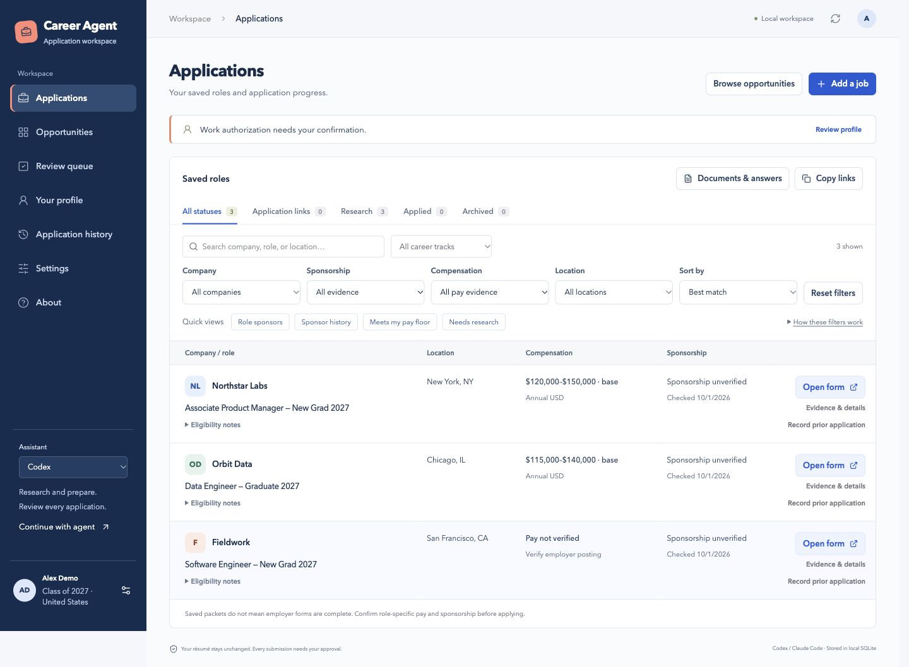

The project
I’m currently developing TUKI to bring job research, candidate facts, prepared answers, and application outcomes into one dependable workflow. The project is private and still in progress.
I’m building on an existing local application baseline rather than starting from an empty dashboard. That baseline already has candidate records, job feeds, versioned review packets, and evidence-based submission records. The next engine work focuses on how inference runs and how work continues reliably in the background.
- My role
- Creator, actively developing the engine
- Status
- Private development in progress
- Working baseline
- React, TypeScript, Express, SQLite; optional Supabase
The working baseline
These capabilities belong to the existing application foundation. They are the starting point for TUKI’s ongoing engine work.
Research with sources
Configured Greenhouse, Lever, and Ashby feeds supply opportunities. Saved candidate preferences and source evidence help assess roles.
Prepare from candidate facts
The dashboard keeps verified facts, preferences, original documents, and missing personal answers together. Answers and document choices become versioned application packets.
Record permission and outcomes
The baseline separates candidate submission, exact-batch review, and authorized automatic submission. Approval follows the current packet version; a submission record needs confirmation evidence.
How the baseline works
The existing TypeScript domain engine owns application state, approval rules, and evidence. Browser work currently runs through an external Codex or Claude Code workflow.
Dashboard and API
React presents candidate setup, opportunities, missing answers, review packets, and history. Express provides the local API.
Application engine
Typed contracts connect candidate facts, eligibility, duplicate checks, packet versions, and submission attempts.
Storage and external agent
SQLite is the default store, with optional Supabase. A bounded CLI supplies work to Codex or Claude Code; their browser tools handle supported employer forms.
This is the working foundation, not a claim that TUKI’s new inference and background orchestration are complete.
A rule worth preserving
Approval belongs to a version. Completion needs evidence.
The baseline binds review approval to the exact answers and documents. A changed packet needs fresh approval. Automatic submission requires its own risk acknowledgment and a current request to apply.
A prepared packet, a filled browser form, and a confirmed submission are different states. I want the new engine to preserve those distinctions as inference and background execution evolve.
Earlier prototype

The prototype makes the candidate record and review process visible. The current development effort is underneath that interface: inference boundaries and durable execution.
What I’m working on now
I’m currently working on two engine concerns. Both are development work in progress, not released capabilities.
Provider-independent inference
I’m working toward an inference layer that can support different model providers without tying application rules to a single provider.
Durable background orchestration
I’m working on how application tasks can continue in the background with persisted progress and recoverable execution, while keeping permission and evidence tied to the application record.
TUKI is private and in active development. There is no public release, source download, or installation offered here.